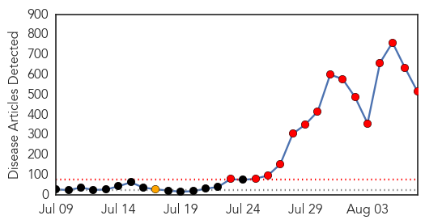
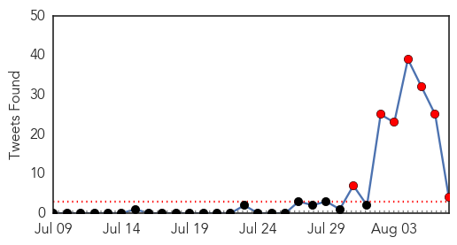
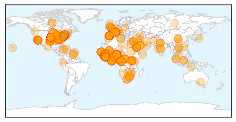
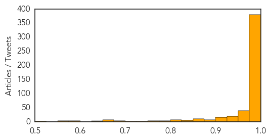

Toggle navigation
Early Warning
Daily Alerts
Ebola
Aug 07, 2014
Compare to:
-
Dengue Fever
Hemmorhagic Fever
Mold/Fungal Infection
Influenza
Meningitis
Pertussis / Whooping Cough
Middle East Respiratory Syndrome
Cholera
Hepatitis
Chikungunya
Yellow Fever
Bubonic Plague
West Nile Virus
Swine Flu
Measles
Unknown
Mumps
30 Day Trends
Web: 15
alerts
, 1
warnings
Twitter: 11
alerts
, 0
warnings
Top Articles:
Showing top 50 articles...
1.000
CDC issues highest-level alert for Ebola
1.000
CDC issues highest-level alert for Ebola
1.000
Saudi Arabia advises against W. Africa travel over Ebola
1.000
EBOLA VIRUS: Bahamians are warned of West African travel
1.000
In West Africa, top UN health official unveils $100 million Ebola response plan
1.000
Experts warn Australian hospitals not to forget other diseases during Ebola alert
1.000
Ebola's spread to US is 'inevitable' says health chief
1.000
Liberia Grapples With Ebola Outbreak
1.000
U.S. orders diplomats' families to leave Liberia as Ebola spreads
1.000
West African Healthcare Systems Reel as Ebola Toll Hits 932
1.000
West African healthcare reels as Ebola toll hits 932
1.000
CDC ramps up Ebola response
1.000
What Happens When One Of The World’s Deadliest Viruses Invades Your Immune System
1.000
Health official downplays hopes for experimental Ebola drugs
1.000
West African officials seek help as Ebola outbreak worsens
1.000
CDC issues highest-level alert for Ebola
1.000
Frightened Ebola patients running away
1.000
Ebola Outbreak Is ‘A Threat Against Humanity’
1.000
West Africa reels as Ebola toll climbs - Africa
1.000
CDC Issues Level 1 Alert Over Ongoing Outbreak
1.000
Ebola virus: Liberia church leaders claim deadly outbreak is 'plague' sent by God for 'homosexualism' and 'immoral acts'
1.000
Ebola death toll surpasses 930 as WHO emergency meeting convenes
1.000
West African healthcare systems reel as Ebola toll hits 932
1.000
Ebola Crisis Shows No Sign of Letting Up
1.000
SADC health ministers call for Ebola action
1.000
As Ebola Spreads in Nigeria, Debate About Experimental Drugs Grows
1.000
What southern Africa is doing to keep Ebola from spreading
1.000
How the Ebola outbreak turned into a racism and responsibility debate
1.000
How does Ebola virus spread and can it be stopped?
1.000
Priest Miguel Parajes becomes first Ebola victim brought to Europe for treatment
1.000
Priest Miguel Parajes becomes first Ebola victim brought to Europe for treatment
1.000
Ebola virus: 9 things to know about the killer disease
1.000
U.S. orders diplomats' families to leave Liberia as Ebola spreads
1.000
Ebola: timeline of a ruthless killer
1.000
Battling Ebola: Working with a Deadly Virus
1.000
Ebola's Spread to U.S. 'Inevitable,' Says CDC Chief
1.000
The Barbados Advocate
1.000
The World On Arirang
1.000
Saudi man suspected of contracting Ebola dies
1.000
State health department issues alert to Alabama hospitals about Ebola virus
1.000
Ebola's spread to US is 'inevitable' says CDC chief
1.000
How does Ebola virus spread and can it be stopped?
1.000
CDC on highest level of alert as Ebola death toll rises
1.000
A worried world watches as Ebola death toll rises; CDC on highest level of alert
1.000
CDC issues highest alert level for Ebola outbreak
1.000
Zim withdraws peacekeepers in Liberia
1.000
SADC takes preventative measures against Ebola
1.000
Liberia declares state of emergency over Ebola virus
1.000
Ebola patient's husband feels 'the comfort of God'
1.000
CDC Issues Highest Alert Response Over Ebola Outbreak « CBS Atlanta
Top Tweets:
0.828
RT: ALERT - live now on: CDC director on the ebola outbreak with and
0.822
Our CEO addresses the Ebola outbreak: http://t.co/rqDIrUc3Te
0.765
Malaria is compounding the impact of Ebola. Fear of Ebola is stopping people seek medical attention http://t.co/NuX4mjYm06
0.708
Meanwhile, in affected countries staff still lack basic PPE... RT"@Crof: The exposed Ebola fighters in Sierra Leone http://t.co/xN1vgv6WrC"
0.658
Impending malaria season in W Africa to complicate Ebola outbreak: a 'slow motion disaster': http://t.co/92SSORpAV4
0.649
If you are interested in a terrific book about Ebola and other infectious diseases, Spillover by is outstanding.
0.642
RT: Estimates of reproductive number and effectiveness of control as Ebola epidemic progresses by: http://t.co/S95OS…
0.523
RT: Update on Ebola - Nigerian nurse dies, 5 other confirmed cases in isolation in Lagos. http://t.co/LXneYrI5Xh
0.509
RT: What's needed to fight Ebola is not fancy equipment. What's needed is standard infection control, rigorously applied.
Web/News Articles

Tweets

Article Locations

Article Confidences
